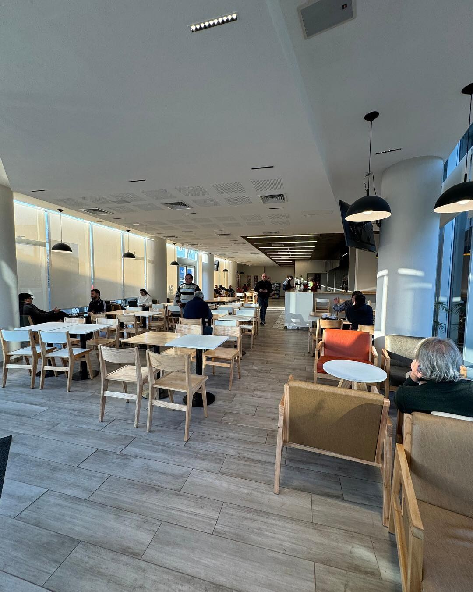
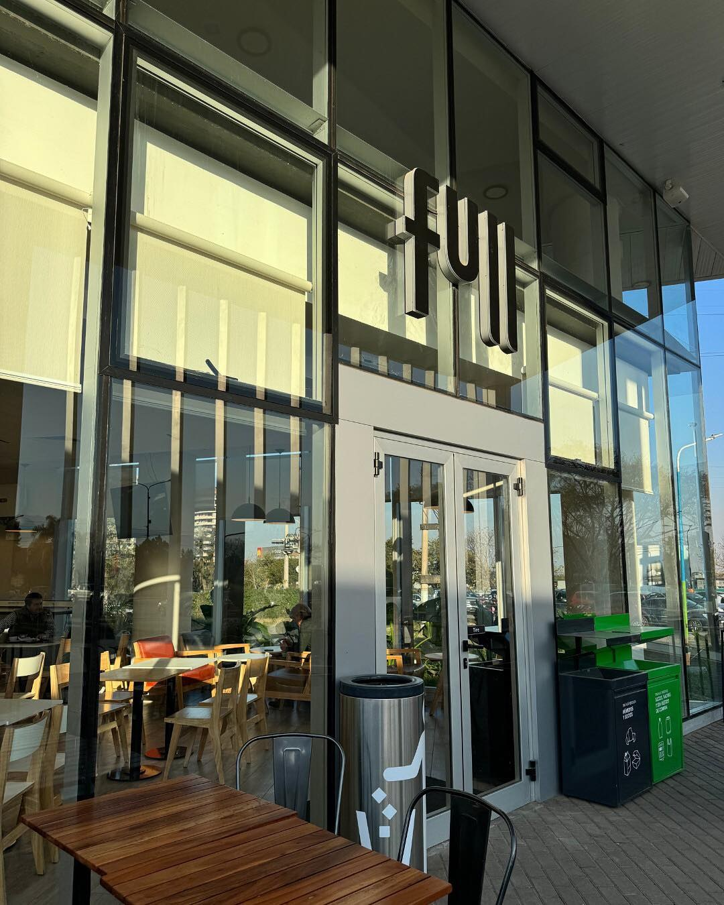
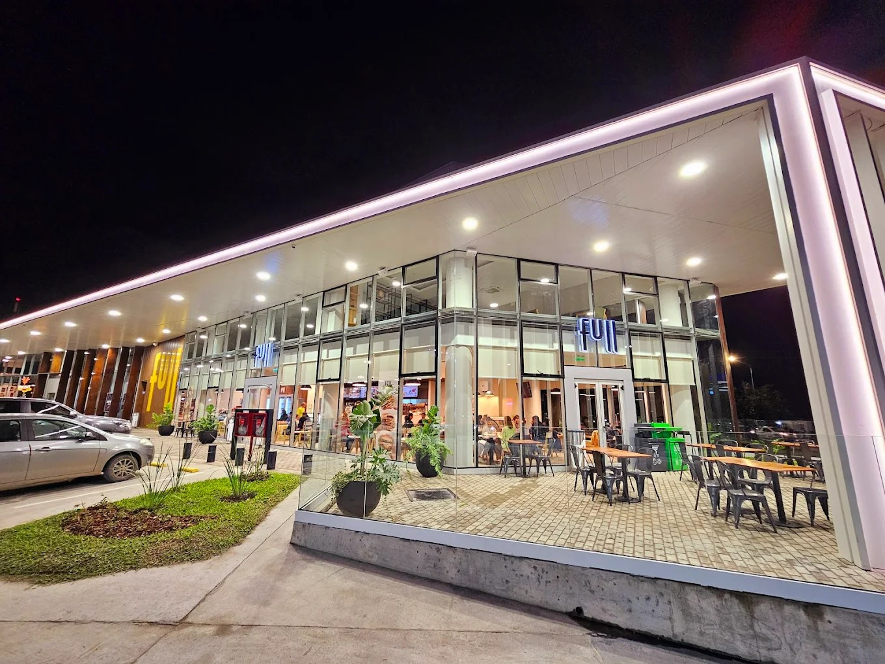
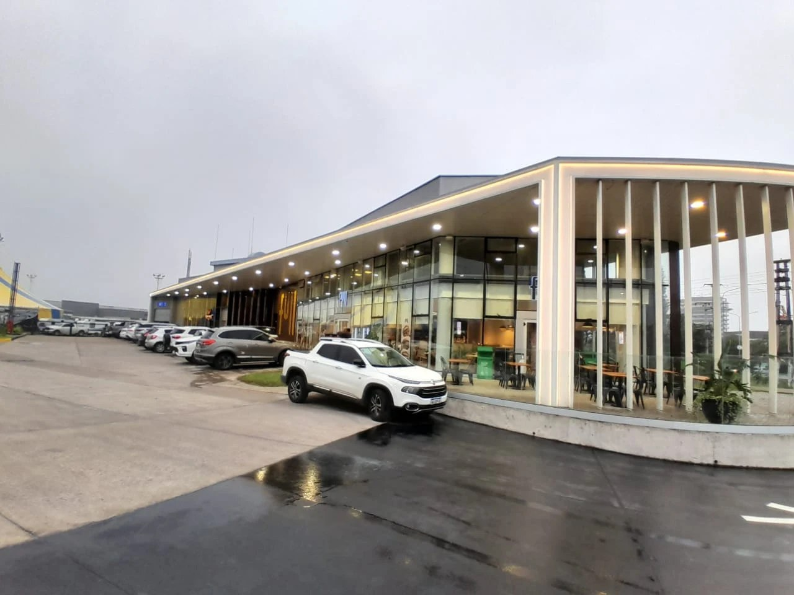
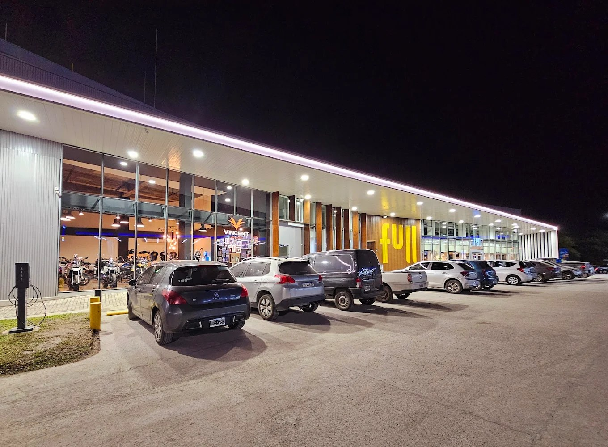

☕
Café y desayunos
Ideal para arrancar el día, cortar la rutina o hacer una pausa antes de salir a ruta.
YPF Full
La experiencia Full de GeoGas reúne café, tienda, bebidas, panadería, snacks y espacios cómodos para desayunar, trabajar un rato o descansar antes de seguir.


Full GeoGas
La Full de GeoGas está pensada como punto de encuentro: interiores luminosos, mesas, sillones, productos de cafetería, opciones rápidas para llevar y una estética cálida dentro de un edificio moderno.
También suma cestos diferenciados y prácticas de consumo más sustentables alineadas al concepto Full.
Ideal para arrancar el día, cortar la rutina o hacer una pausa antes de salir a ruta.
Facturas, productos de góndola, chocolates, galletitas, bebidas y opciones rápidas para llevar.
La App permite agilizar compras, sumar beneficios y usar puntos ServiClub en propuestas seleccionadas.
Promos
Dejé el sitio preparado para publicar promociones de temporada, pero sin mostrar como vigente el flyer PDF porque la pieza subida corresponde a una campaña con fecha 01/09/2025 al 31/10/2025. En el README te dejé indicado dónde reemplazar ese PDF o cargar una promo nueva.
Ver PDF cargado

